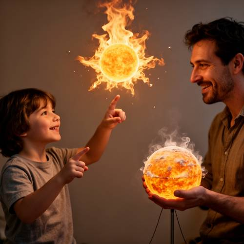
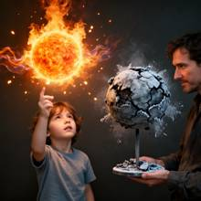

Relationship — A child drew a floating, burning sun in the air with his fingers, whil
A child drew a floating, burning sun in the air with his fingers, while an adult next to him held a cold, extinguished model of the sun.

Direct — one call, no iterationContinuum — Kimi K3 + FLUX.2-dev
Judge — Direct
FAILRelationship - Comparison — In the image, there is a comparison between a floating, burning sun and a model of the sun held by an adult. However, the model held by the adult is not 'cold' or 'extinguished'; instead, it is glowing from within and emitting smoke or steam, suggesting it is hot.
PASSAction - Hand (Character/Anthropomorphic) — The adult is depicted holding a spherical model with both hands. The child is shown pointing at the floating sun with the index finger of his right hand. The hands of both the child and the adult are well-formed and engaged in the specified actions of holding and gesturing with fingers.
FAILAction - State — The sun in the air is depicted as 'floating' and 'burning' with visible flames and light. The model of the sun held by the adult, however, is not 'extinguished.' It is glowing and has smoke rising from it, indicating heat rather than being cold or extinguished.
PASSCompound - Imagination — The image depicts a scene that is impossible in reality: a child is positioned next to a small, burning sun that is floating in mid-air. The child is pointing at it, implying he has created or summoned it with his finger, which aligns with the imaginative concept.
Judge — Continuum
PASSRelationship - Comparison — The image visually presents a stark comparison between two objects. On the left is a bright, fiery sphere resembling a burning sun, glowing with yellow and orange light and surrounded by flames. On the right, a man holds a grey, cracked, and seemingly frozen sphere on a stand, which appears cold and inert, fitting the description of an extinguished model.
PASSAction - Hand (Character/Anthropomorphic) — The image depicts two figures and their hand actions. A child on the left has his right arm raised, pointing his index finger towards the burning sun. His hand is well-formed with a normal number of fingers. An adult on the right is holding the base of a model with both hands. His hands are also depicted realistically.
PASSAction - State — The image successfully depicts the required states. The sun-like object on the left is 'floating' in the air without any visible support and is clearly 'burning', as shown by its fiery appearance, flames, and glowing embers. The model held by the adult is dark, cracked, and covered in a frost-like substance, visually representing an 'extinguished' or cold state.
PASSCompound - Imagination — The image portrays an imaginative and impossible scene. A child is shown seemingly creating or interacting with a floating, burning sun in the air simply by pointing his finger at it, which defies the laws of reality.
What the agent did
Thinking
We need generate image benchmark. Need use flux2-dev. Need understand prompt perhaps surreal scene. Need make image. No size seed. Generate. Need probably child drawing glowing sun in air with fingers; adult holding cold extinguished model of sun. Need show contrast. Could be indoors/field? We can choose. Need visual detail. Need likely inspect output and edit. Let's generate perhaps 1024 square default.
Step 1 — `generate_image`
{
"model": "flux2-dev",
"prompt": "A surreal cinematic scene showing a young child standing with an adult beside him. The child reaches up and draws a floating burning sun in midair with his bare fingertips: a bright spherical sun with orange and yellow flames, glowing embers, radiant heat waves, and light illuminating the child's face. Next to him, the adult holds a cold, extinguished physical model of the sun: a gray-black charred sphere mounted on a thin stand, covered with frost and ash, dim and lifeless. Clear contrast between the child's fiery floating sun and the adult's cold dead model, visible side by side, natural body language, realistic mixed with magical realism, detailed textures, dramatic warm-versus-cold lighting, uncluttered dark background that keeps both figures and both suns clearly visible."
}
Result img_0

Thinking
Image looks quite good. Need inspect maybe potential issue child "drew with his fingers" yes index finger touches under sun. Adult holds cold model. Could mark best now. Need inspect perhaps fingers or model? Need evaluate all elements. Prompt asks "A child drew a floating, burning sun in the air with his fingers, while an adult next to him held a cold, extinguished model of the sun." Image indeed child, index finger perhaps at bottom of sun, fiery floating sphere. Adult beside, model. Maybe adult slightly cut off, but okay. Could improve child touching/painting finger with light, and adult visible full. But "good enough". Need mark.
Step 2 — `mark_best`
{
"image": "img_0",
"reason": "All requested elements are clearly present: the child traces a bright burning sun floating in midair with one finger, while the adult beside him holds a gray, frosted, extinguished sun model. The warm-versus-cold contrast is strong and legible."
}
Thinking
Need final concise.
Model
Generated and selected the strongest result. It clearly shows the child creating a fiery floating sun with his finger while the adult holds a cold, extinguished sun model beside him.